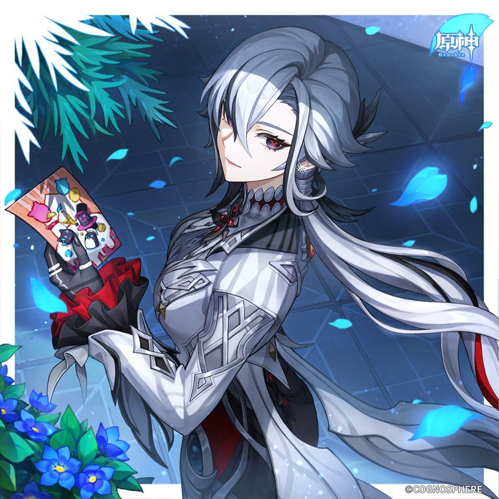
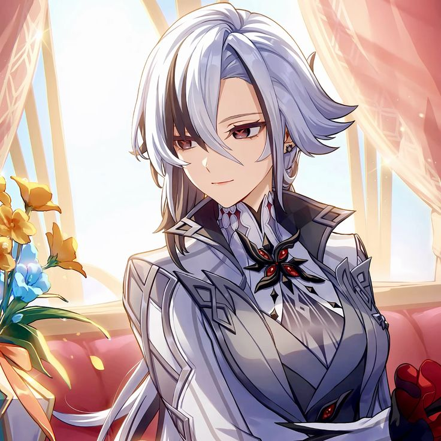
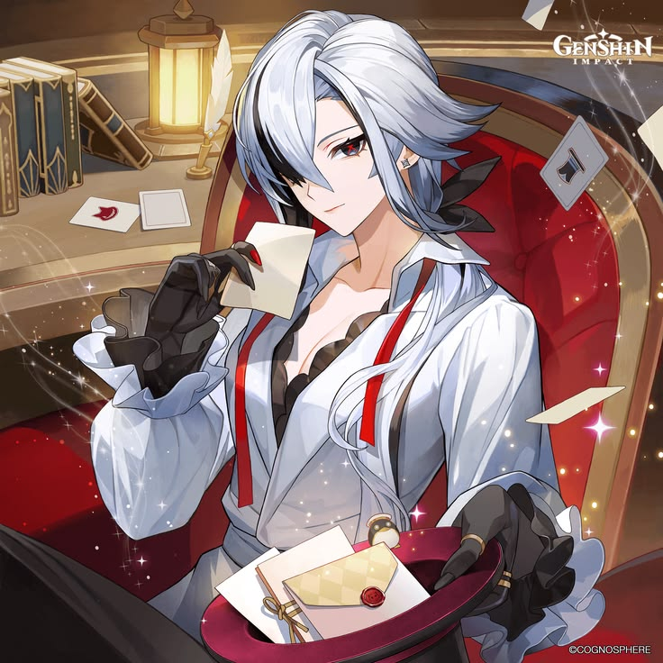

Arlecchino
A Quarta das Onze Mensageiras dos Fatui. Conhecida como "The Knave", Arlecchino administra a Casa da Lareira e protege as crianças que vivem sob sua tutela.
A Quarta Mensageira
Arlecchino é uma personagem de Genshin Impact e uma das Onze Mensageiras dos Fatui. Ela é conhecida pelo título "The Knave" e está diretamente ligada à Casa da Lareira.
Diferentemente de muitos membros dos Fatui, Arlecchino possui uma relação extremamente complexa com as crianças sob sua responsabilidade.
A Casa da Lareira funciona como um lar para crianças sem família. Ali, elas são educadas, treinadas e preparadas para eventualmente servirem aos interesses dos Fatui.
Sua história também está profundamente ligada à antiga diretora da Casa da Lareira e aos acontecimentos que levaram Arlecchino a assumir essa posição.
- Nome Arlecchino
- Título The Knave
- Organização Fatui
- Posição 4ª Mensageira
- Elemento Pyro 🔥
- Arma Lança
- Região Fontaine
Uma história marcada pelo fogo
A Casa da Lareira
A Casa da Lareira já existia como uma instituição ligada aos Fatui, recebendo crianças que não tinham família e oferecendo-lhes uma nova vida.
A antiga diretora
A antiga liderança da Casa seguia regras extremamente rígidas. Arlecchino cresceu nesse ambiente e acabou entrando em conflito com o sistema que controlava aquelas crianças.
O nascimento de The Knave
Depois dos acontecimentos que mudaram completamente sua vida, Arlecchino assumiu a posição de diretora da Casa da Lareira e passou a ser reconhecida como uma das Mensageiras dos Fatui.
A mãe da Casa da Lareira
Para as crianças da Casa, Arlecchino se torna uma figura de autoridade e proteção. Ao mesmo tempo, continua sendo uma peça importante dentro da estrutura dos Fatui.
O Kit da Arlecchino
A identidade de gameplay da Arlecchino gira em torno de ataques normais fortalecidos, Pyro e principalmente da mecânica de Vínculo de Vida.
Ataque Normal
Arlecchino utiliza sua lança para executar uma sequência de ataques rápidos. Sob determinadas condições, seus ataques podem ser convertidos em ataques Pyro.
Dano físico / PyroHabilidade Elemental
Arlecchino aplica uma marca aos inimigos e cria as condições necessárias para obter seu recurso especial: o Vínculo de Vida.
Blood-DebtExplosão Elemental
Uma poderosa manifestação de seu poder Pyro que causa dano em área e também interage com suas condições de combate e recursos acumulados.
Pyro • AoEVínculo de Vida
Uma das mecânicas centrais de Arlecchino. O recurso representa uma parte da vida que não pode ser curada normalmente e é convertido em poder ofensivo.
Mecânica exclusivaVínculo de Vida
O Vínculo de Vida, ou Bond of Life, é uma mecânica associada à Arlecchino que altera a forma como ela administra sua vida durante o combate.
Em vez de simplesmente receber cura e recuperar HP, ela utiliza o Vínculo de Vida como parte de sua mecânica ofensiva.
Quando suas condições são cumpridas, o recurso influencia diretamente seus ataques e permite que Arlecchino mantenha uma presença extremamente ofensiva em campo.
Curiosidades
"The Knave"
Arlecchino é conhecida dentro dos Fatui pelo título de "The Knave", sendo a Quarta das Onze Mensageiras.
A Casa da Lareira
As crianças da Casa da Lareira são conhecidas por tratarem umas às outras como irmãos e irmãs.
Pyro
Arlecchino é uma personagem Pyro e utiliza uma lança como sua arma.
Uma família incomum
A relação entre Arlecchino e as crianças da Casa mistura proteção, disciplina, treinamento e lealdade.
Estética
Seu design utiliza elementos associados a cartas, teatro, vermelho, preto e símbolos de autoridade.
Uma Mensageira
Os Onze Mensageiros são alguns dos membros mais importantes da organização Fatui.
Arlecchino
Alguns momentos, expressões e detalhes da personagem.


